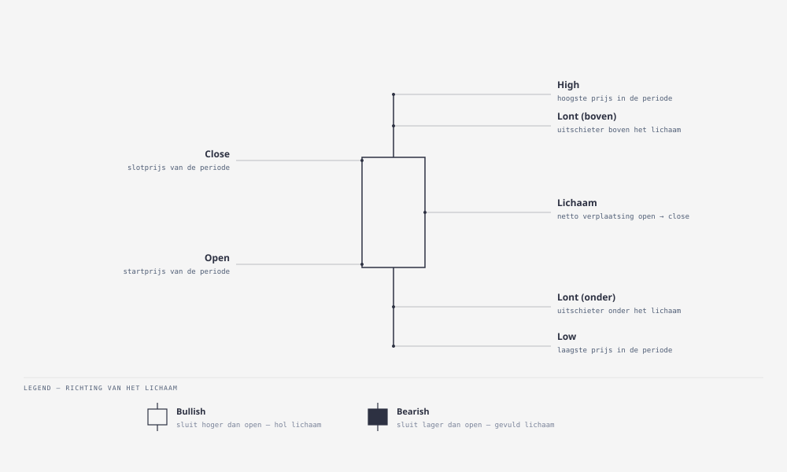
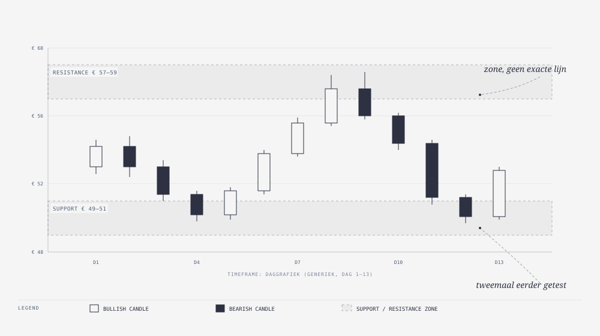

Cursus Systematisch Traden · Niveau 1 (Fundament) · Deel 5 van 30
Charts lezen Candles, trend, zones.
De anatomie van een candlestick — open, close, high, low, lichaam en lonten — wat een timeframe doet met hoe dezelfde markt oogt, hoe u een trend classificeert aan de hand van pieken en dalen, en waarom support en resistance zones zijn, geen exacte lijnen.
6secties
±50 minleestijd + werkboek
1controlevraag
N1Fundament
Disclaimer. Deze reader is educatief materiaal, geen financieel advies. Trading kent verliesrisico, tot en met het volledige verlies van uw inzet; bij CFD's en andere hefboomproducten kan het verlies groter zijn dan de oorspronkelijke inzet. Alle prijsvoorbeelden in dit deel ("aandeel X noteert €50") zijn generiek en geanonimiseerd — geen actuele tickers of koersen, en geen aanbeveling om in een specifiek instrument te handelen. Niets in dit deel garandeert rendement; chartanalyse is een hulpmiddel om waarschijnlijkheden in te schatten, geen voorspelling.
Niveau 1 · Fundament: ① Introductie → ② Markten en beurzen → ③ Ordertypes → ④ Brokerlandschap → ⑤ Charts lezen (hier) → ⑥ Technische-analysebasis → ⑦ … → ⑩ Deel 10
01
Waarom een chart de eerste taal van de trader is
⏱ 5 min
Een chart is een grafische weergave van prijs over tijd. Voor vrijwel elke trader — of die nu volledig op gevoel handelt of straks, in niveau 2 en 3 van deze cursus, een volledig systematische strategie bouwt — is de chart het eerste scherm dat opengaat. Voordat u iets over indicatoren, entry-regels of risk management kunt zeggen, moet u kunnen lezen wát er eigenlijk op dat scherm staat.
Fenna gebruikt sinds ze begon met traden TradingView om haar charts te bekijken. In haar eerste maanden deed ze dat vooral intuïtief: ze zag een lijn die omhoogging en kocht, of ze zag een lijn die naar beneden dook en verkocht in paniek. Ze had geen taal voor wat ze zag — geen woord voor "dit is een sterke afwijzing van een prijsniveau" of "dit is een zwakke, besluiteloze candle". Die taal is precies waar dit deel over gaat. Charts lezen is geen kunst die je "gewoon aanvoelt"; het is een vaardigheid met een vast vocabulaire, die met oefening steeds scherper wordt.
Er bestaan meerdere manieren om prijs te visualiseren — lijngrafieken, staafgrafieken (OHLC-bars) — maar de candlestick-chart is verreweg de meest gebruikte onder zowel particuliere als professionele traders, omdat één candle in één oogopslag vier prijspunten en de sfeer van een periode toont. Dit deel behandelt daarom candlesticks als basis, gevolgd door timeframes, trend en de zones die bekendstaan als support en resistance.
02
De candlestick: anatomie van één candle
⏱ 8 min
Een candlestick vat de prijsbeweging van één afgebakende periode samen — bijvoorbeeld één dag, één uur of vijf minuten, afhankelijk van het gekozen timeframe (sectie 3). Elke candle bestaat uit vier prijspunten:
Open — de prijs waarop de periode begon.
Close — de prijs waarop de periode eindigde.
High — de hoogste prijs die tijdens de periode werd bereikt.
Low — de laagste prijs die tijdens de periode werd bereikt.
Deze vier punten worden getekend als twee onderdelen. Het lichaam (de dikke rechthoek) loopt van open tot close en toont de netto-verplaatsing van de prijs binnen de periode. De lonten of schaduwen (de dunne lijnen boven en onder het lichaam) lopen van het lichaam naar respectievelijk de high en de low, en tonen hoe ver de prijs binnen de periode is uitgeweken voordat hij weer terugkwam.
De kleur van het lichaam vertelt de richting:
Een bullish candle (traditioneel groen of wit) sluit hoger dan hij opende: kopers hadden binnen die periode de overhand.
Een bearish candle (traditioneel rood of zwart) sluit lager dan hij opende: verkopers hadden de overhand.
De grootte van het lichaam zegt iets over de kracht van die beweging. Een lang lichaam betekent een grote, besliste verplaatsing tussen open en close — sterke overtuiging in één richting gedurende die periode. Een klein lichaam betekent dat open en close dicht bij elkaar liggen — besluiteloosheid, ook al kan de prijs tussentijds (zichtbaar aan lange lonten) flink hebben uitgeslagen.
Lange lonten zijn op zichzelf al informatief. Een lange onderlont betekent dat de prijs tijdens de periode fors is weggezakt, maar dat kopers die daling hebben teruggekocht tot dicht bij (of boven) de openingsprijs — een teken dat er op dat lagere niveau vraag ontstond. Een lange bovenlont is het spiegelbeeld: de prijs schoot omhoog, maar verkopers duwden hem weer terug. Eén candle bewijst nooit een patroon; het is een los datapunt dat pas betekenis krijgt in de context van de candles ervoor en erna, en van het bredere prijsniveau waarop het gebeurt (zie sectie 5).

Figuur 5-1 — Candlestick-anatomie: open, close, high, low, lichaam en lonten
03
Timeframes: dezelfde markt, ander detailniveau
⏱ 8 min
Elke candle vertegenwoordigt een vaste tijdsperiode, en die periode kiest u zelf als trader: dat heet de timeframe. Veelgebruikte timeframes zijn onder meer 1 minuut, 5 minuten, 1 uur, 4 uur, 1 dag (daily) en 1 week (weekly). Op een daggrafiek toont elke candle de open, close, high en low van één handelsdag; op een 5-minutenchart toont elke candle datzelfde, maar dan voor een periode van vijf minuten.
Belangrijk is dat dezelfde onderliggende koers er op verschillende timeframes wezenlijk anders uit kan zien. Een beweging die op een 5-minutenchart een dramatische, snelle uitschieter lijkt, kan op een daggrafiek nauwelijks zichtbaar zijn — een rimpeling binnen één candle van die dag. Omgekeerd kan een daggrafiek een duidelijke, weken durende trend tonen die op een 5-minutenchart schuilgaat achter tientallen kleine op- en neerbewegingen die voor een kortetermijnhandelaar relevant zijn, maar voor het grote plaatje ruis vormen.
Dit heeft een praktische consequentie: de timeframe die u kiest, moet aansluiten bij de stijl en het houdperiode-doel van uw trade. Wie posities dagen tot weken wil aanhouden, oriënteert zich primair op de daggrafiek (en kijkt hooguit ter verfijning naar een lagere timeframe voor het instapmoment). Wie binnen enkele uren of minuten in en uit een positie wil, werkt juist primair op een lage timeframe. Fenna's eerste jaar illustreert wat er misgaat als deze keuze niet bewust is: ze bekeek soms een sterke candle op de 5-minutenchart, stapte in vanuit die korte-termijnindruk, maar had eigenlijk — zonder dat ze zich dat op dat moment realiseerde — een positie geopend die paste bij een swingtrade-mentaliteit van dagen. Het timeframe waarop u kijkt en het timeframe waarop u eigenlijk denkt te handelen, moeten bij elkaar passen; verderop in deze cursus (niveau 2) legt u die keuze expliciet vast in een strategy blueprint.
Timeframes zijn ook hiërarchisch met elkaar verbonden: één daily candle is opgebouwd uit alle intraday-candles van die dag. Een trader die op de daggrafiek een setup ziet, kijkt vaak nog even op een lagere timeframe om het exacte instapmoment te verfijnen — dat heet multi-timeframe-analyse, een techniek die in latere delen verder terugkomt.
04
Trend herkennen: hogere pieken en dalen, of het omgekeerde
⏱ 7 min
Een trend is de overheersende richting waarin de prijs zich over een reeks candles beweegt. De meest gebruikte manier om een trend te classificeren, kijkt naar de opeenvolging van pieken (swing highs) en dalen (swing lows):
Opgaande trend (uptrend): elke nieuwe piek ligt hoger dan de vorige, en elk nieuw dal ligt hoger dan het vorige. De markt maakt met andere woorden "hogere hogens en hogere lagens".
Neergaande trend (downtrend): het spiegelbeeld — elke nieuwe piek ligt lager dan de vorige, elk nieuw dal ligt lager dan het vorige.
Zijwaartse markt (range): pieken en dalen bewegen ruwweg binnen dezelfde bandbreedte, zonder duidelijk hogere of lagere niveaus. De markt "zoekt" dan tussen een bovengrens en een ondergrens zonder overtuigende richting.
Een trend is nooit een rechte lijn omhoog of omlaag — ook binnen een sterke uptrend zijn er terugvallen (pullbacks of retracements), en binnen een sterke downtrend zijn er tijdelijke opleving (bounces). Wat de trend bepaalt, is niet de afwezigheid van tegenbeweging, maar het patroon van de opeenvolgende pieken en dalen op de tijdshorizon waarop u kijkt. Dat laatste is essentieel: een aandeel kan op de daggrafiek in een duidelijke uptrend zitten terwijl het op een 15-minutenchart net een felle correctie doormaakt. Beide waarnemingen zijn "waar" — ze beschrijven alleen een andere tijdshorizon (vergelijk sectie 3).
Trendherkenning is de basis waarop een groot deel van technische analyse voortbouwt (deel 6 gaat hier dieper op in met voortschrijdend gemiddelde en volume). Voor nu is het doel dat u, kijkend naar een willekeurige chart, binnen enkele seconden kunt zeggen: is dit een uptrend, een downtrend, of een range? En: op welke timeframe geldt dat oordeel?
05
Support en resistance: zones, geen exacte lijnen
⏱ 10 min
Support is een prijsniveau waar de vraag historisch sterk genoeg was om een daling te stoppen of om te buigen — kopers stapten daar herhaaldelijk in, waardoor de prijs telkens weer omhoogkaatste. Resistance is het spiegelbeeld: een prijsniveau waar verkopers historisch de overhand namen, waardoor stijgingen daar herhaaldelijk afgeremd of omgebogen werden.
Veelgemaakte beginnersfout
Support en resistance behandelen als exacte, haarscherpe lijnen: "support ligt precies op €48,20." In werkelijkheid reageert de markt zelden op één exacte prijs; het is realistischer om te denken in zones: een bandbreedte waarbinnen kopers of verkopers historisch actief werden. Wie een lijn te strak trekt, is verbaasd wanneer de prijs een paar cent doorbreekt en dan alsnog omkeert; wie in een zone denkt, herkent dat als normale ruis binnen hetzelfde niveau. Fenna maakte deze fout in haar eerste maanden ook.
Stel dat aandeel X drie keer eerder is teruggekaatst rond een gebied tussen €48 en €49 — dan is dat gebied de supportzone, niet de losse waarde €48,20.
Een tweede belangrijk principe is dat support en resistance van rol kunnen wisselen. Wanneer een resistancezone met overtuiging wordt doorbroken (op hoger volume, met een sterke candle die duidelijk boven de zone sluit), wordt diezelfde zone vaak de nieuwe supportzone bij een volgende terugval — de markt "onthoudt" als het ware dat niveau, alleen nu vanuit de andere richting. Dit heet role reversal en is een van de meest betrouwbare, terugkerende patronen in prijsgrafieken.
Hoe sterker en vaker een zone is getest zonder duurzaam te breken, hoe belangrijker traders die zone doorgaans achten — al is dat geen garantie: elke zone breekt uiteindelijk een keer, en hoe vaker een niveau wordt getest zonder te breken, hoe groter (volgens sommige traders) ook de kans dat de volgende test wél doorbreekt, omdat de kooplust op dat niveau langzaam kan uitdunnen. Support en resistance zijn dus geen wetten van de natuurkunde, maar een samenvatting van collectief gedrag uit het verleden — een nuttig, maar niet onfeilbaar hulpmiddel.
Ter illustratie: stel dat aandeel X al enkele weken tussen een supportzone rond €50 en een resistancezone rond €58 beweegt (een range, zie sectie 4), met twee eerdere terugkaatsen bij support en één afwijzing bij resistance. Zo'n chart geeft een trader een concreet beeld: dicht bij €50 is er historisch koopdruk geweest, dicht bij €58 verkoopdruk. Wat een trader daarmee doet — er wel of niet op handelen, met welke stop-loss, met welke positiegrootte — is stof voor latere delen over ordertypes, entry-regels en risicomanagement. Dit deel stopt bij het kunnen aanwijzen van de zones zelf.

Figuur 5-2 — Voorbeeldchart met trend, support- en resistancezones
Controlevraag
Uit Werkboek deel 5, Opdracht 5.6
1Fenna bekijkt de daggrafiek van aandeel Y. De prijs heeft de afgelopen twee maanden drie keer een bodem gevormd rond een zone tussen €24 en €25, en is telkens weer gestegen tot ergens tussen €29 en €30, waar de stijging drie keer afketste. Hoe zou u de trend van de afgelopen twee maanden classificeren, en welke rol spelen de zones €24-€25 en €29-€30?Toon antwoord
Op basis van deze beschrijving is er sprake van een range: de prijs beweegt herhaald tussen een onderzone en een bovenzone zonder dat de pieken of dalen structureel hoger of lager worden. De zone rond €24-€25 fungeert als supportzone (drie keer teruggekaatst omhoog), de zone rond €29-€30 als resistancezone (drie keer afgewezen).
06
Waarom dit meer is dan alleen kijken naar een plaatje
⏱ 4 min
De vaardigheid die dit deel behandelt — candles, timeframes, trend, support en resistance — lijkt eenvoudig, maar is de basis waarop bijna elke verdere stap in deze cursus voortbouwt. In deel 6 leert u hoe voortschrijdend gemiddelde en volume deze waarnemingen aanvullen. In niveau 2 legt u vast op welke timeframe uw strategie precies opereert, en wordt "ik zag een sterke candle bij een supportzone" omgezet in een expliciete, herhaalbare entry-regel binnen uw strategy blueprint.
Fenna's ervaring is illustratief voor waarom dit stapsgewijs moet gaan. In haar eerste tradingjaar wist ze grofweg wat een candle was, maar kon ze onder tijdsdruk niet snel genoeg beoordelen of een sterke candle bij een eerder geteste supportzone gebeurde — of gewoon ergens midden in een range, zonder enige context. Dat verschil is precies waar geoefend charts lezen het verschil maakt tussen een onderbouwde waarneming en een losse ingeving.
Verder naar deel 6
Deel 6: Technische-analysebasis — voortschrijdend gemiddelde en volume.